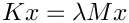
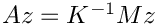
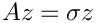
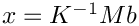
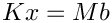

Compute smallest eigenvalues of a generalized eigenvalue problem, using block Krylov-Schur with Epetra and an Amesos direct solver.
Compute smallest eigenvalues of a generalized eigenvalue problem, using block Krylov-Schur with Epetra and an Amesos direct solver.This example computes the eigenvalues of smallest magnitude of a generalized eigenvalue problem , using Anasazi's implementation of the block Krylov-Schur method, with Epetra linear algebra and a direct solver from the Amesos package.
Anasazi computes the smallest-magnitude eigenvalues using a shift-and-invert strategy. For simplicity, this example uses a shift of zero. It illustrates the general pattern for using Anasazi for this problem:
Construct an "operator" A such that .
Use Anasazi to solve , which is a spectral transformation of the original problem .
The eigenvalues of the original problem are the inverses of the eigenvalues of the transformed problem.
In the example, the "operator A such that \f$A z = K^{-1} M z\f$" is a subclass of Epetra_Operator. The Apply method of that operator takes the vector b, and computes . It does so first by applying the matrix M, and then by solving the linear system  for x. Trilinos implements many different ways to solve linear systems. The example uses the sparse direct solver KLU to do so. Trilinos' Amesos package has an interface to KLU.